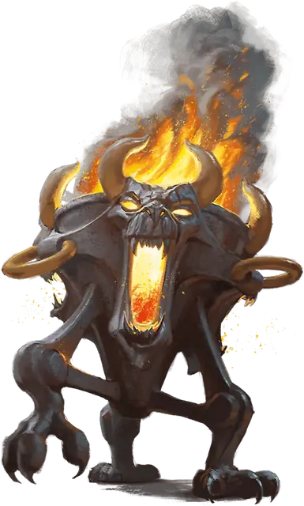

Оживление вещей
Animate Objects
5 уровень, Преобразование

Время сотворения Действие
Дистанция 120 футов
Компоненты В, С
Длительность Концентрация, вплоть до 1 минуты
Классы Артефактор, Бард, Волшебник, Чародей
По вашему приказу оживают предметы. Выберите находящиеся в пределах дистанции немагические объекты Огромного размера или меньше, которые никто не несёт и не носит. Максимальное число объектов равно вашему модификатору заклинательной характеристики, причём объекты Среднего размера или меньше считаются за один объект, объекты Большого размера за два, а Огромного размера — за три.
Каждый выбранный объект оживает, выпускает ножки и становится Конструктом, использующим блок статистики Оживлённого объекта; это существо находится под вашим контролем, пока действует заклинание или пока его Хиты не будут опущены до 0. Каждое оживлённое вами этим заклинанием существо — союзник вам и вашим союзникам. В бою оно имеет то же значение Инициативы, что и вы, и ходит сразу после вас.
Пока заклинание действует, Бонусным действием вы можете мысленно отдать приказ одному из созданных вами этим заклинанием существ, если оно находится в пределах 500 футов от вас (если под вашим контролем находится несколько существ, вы можете приказывать одновременно любому количеству из них; все они получат один приказ). Если вы ничего не приказываете, оживлённое существо применяет действие Уклонение и перемещается так, чтобы избегать опасности. Когда Хиты существа падают до 0, оно возвращается в форму изначального объекта, и весь оставшийся урон наносится этому объекту.
Используя ячейку заклинания большего уровня. Урон Мощного удара существ увеличивается на 1к4 (Средний размер или меньше), на 1к6 (Большой размер) или на 1к12 (Огромный размер) за каждый уровень ячейки выше 5-го.